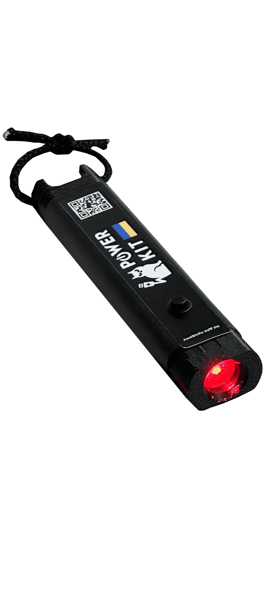
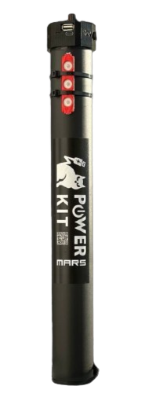

<section class="section-img section">
  <div class="container container-img">
    <h2 data-lng="img-title-h2" class="hidden-element">Приклади повербанків</h2>
    <ul class="img-list">
      <li class="img-item img-item1">
        <div>
          <picture>
            
          </picture>
        </div>
        <div class="img-item-description">
          <p class="img-item-description-amount">
            <span class="text-accent"> Green</span>
          </p>
          <p data-lng="img-description-flashlight-green" class="img-item-description-text">
            Ліхтарик з червоним світлом. Має вхід USB Type-C для зарядки, ремінець для кріплення на рюкзак або одяг.
            А також магніт та липучу стрічку для фіксації на металевих поверхнях або на спорядженні.
            Акумулятора вистачить на тиждень роботи.
          </p>
        </div>
      </li>
      <li class="img-item img-item2">
        <div>
          <picture>
            
          </picture>
        </div>
        <div class="img-item-description">
          <p class="img-item-description-amount">
            <span class="text-accent"> Mars Pro</span>
          </p>
          <p data-lng="img-description-34mAh" class="img-item-description-text">
            Повербанк із ємністю 34.000 mAh. Його ємності
            буде достатньо, щоб зарядити середній смартфон 8 разів.
            Має вихід для зарядки військових рацій та USB для зарядки гаджетів а також ліхтар червоного кольору.
          </p>
        </div>
      </li>
    </ul>
  </div>
</section>
